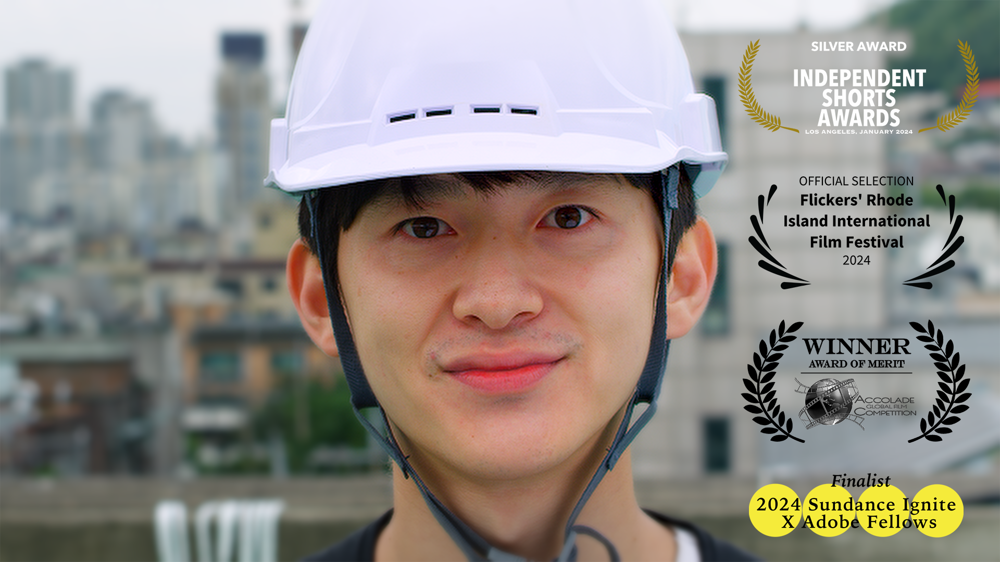
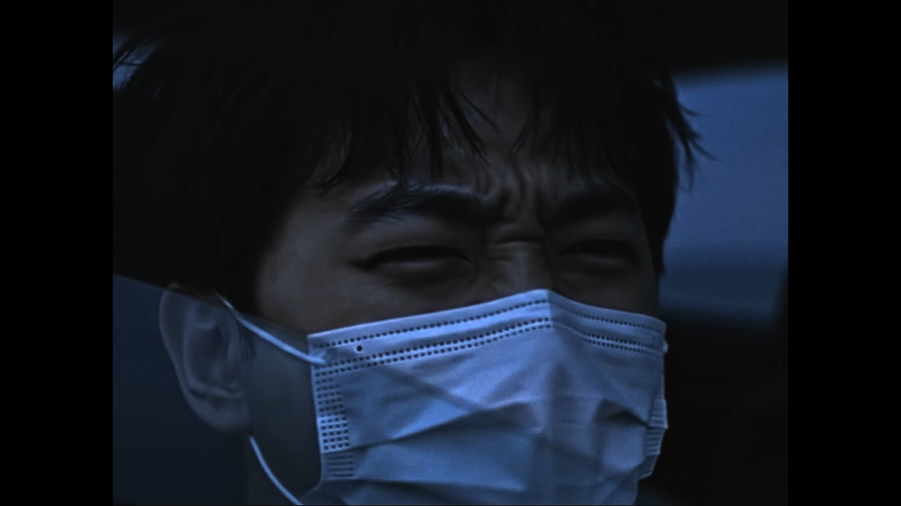
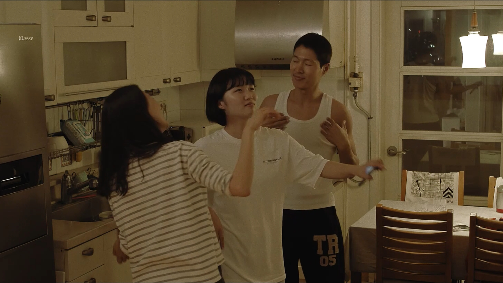

Jonghoon Ahn · Media Portfolio (Media Arts + Practice)
Interactive Art
To Eternity

To Eternity is an interactive media art installation commemorating the Gwangju Democratization Movement of May 18, 1980. Archival photographs taken during the 1980 uprising are algorithmically mosaicked in real time over the viewer’s image.
AI ZOO


AI ZOO is a mixed media installation that metaphorically frames artificial intelligence—both as a human creation and a product of technology—within the conceptual space of a "zoo." Inside a large transparent acrylic sphere, balloons of varying sizes represent the diffusion and training models of AI, visualizing its internal learning processes.
Jemulpo Photo Studio

Jemulpo Photo Studio is an interactive media installation that transforms visitors’ portraits into stylized magazine covers inspired by the “New Women” aesthetic of early Jemulpo (modern-day Incheon) during the colonial period.
Virtual Human Gang Se-hwang

Gang Se-hwang AI Docent is an interactive media installation that digitally revives the historical figure Gang Se-hwang—renowned painter and mentor to Kim Hong-do—as an AI human.
Directed By AI
Directed By AI is a collaborative film and media installation co-directed by Jonghoon Ahn and an AI system trained to develop narrative structure, characters, and visuals. Based on Ahn’s personal facial data, the project reconstructs his mother and sister as virtual beings, generating a new fictional family.
Silhak Dance

Silhak Dance is an interactive media installation featuring a digital character of Kim Yuk, a leading scholar of the Silhak (Practical Learning) movement. The virtual Kim Yuk mimics the audience’s body movements in real time, creating a playful and educational dance interaction.
AI Choi Jung Hoon

This research-based installation explores the reconstruction of Choi Jung-hoon, the lead vocalist of the Korean band JANNABI, as an AI-generated digital human. Utilizing large language models (LLMs), the system is trained on Choi’s voice, personality traits, appearance, and public data. These elements are integrated into a real-time digital avatar that visually resembles him.
Fineo, Translated Universe

Fineo, Translated Universe VR is a virtual reality project that received the Grand Prize at the 16th Kookmin University Art & Design Exhibition. The work reconstructs the periodic table by mapping elemental data through harmonograph-based functions, generating a new system of visual logic.
Media Art
DADA Myeongdong

This project is part of the 2025 Art Korea Lab Media Artist Incubation Program and will be screened on the Media Wall of Shinsegae Department Store in Myeongdong.
Dream of Salmon
As luminous hand-shaped fish drift through darkness, they gather, disperse, and dissolve—echoing the dreamlike migration of memory, loss, and rebirth beneath the surface of perception.
Fall of Minds
Fall of Minds is an interactive media art installation that visualizes ambient noise as a generative force. The surrounding soundscape becomes a variable—shaping the movement, density, and complexity of a cascading cloud-like waterfall projected in real time.
Sininho Digital Human
The Nature of Manpasikjeok reinterprets the ancient Korean legend of the magical flute said to calm disasters and bring prosperity. Visualizing wind and sound through generative media, the work evokes the mythic role of Manpasikjeok in protecting the city—symbolically warding off wildfires and floods to bless Daegu and its citizens with peace and fortune.
Seon-a’s Family

Seon-a’s Family is a storytelling-based media art piece that explores familial conflict and reconciliation through advanced technologies. By integrating diffusion models, large language models (LLMs), and digital human technologies, Seon-a’s journey unfolds across multiple layers of time and space—transcending linear narrative conventions.
XR · Game
Fineo, Translated Universe
Fineo, Translated Universe VR is a virtual reality project that received the Grand Prize at the 16th Kookmin University Art & Design Exhibition. The work reconstructs the periodic table by mapping elemental data through harmonograph-based functions, generating a new system of visual logic.
NARCI

NARCI is an immersive VR experience that places the viewer inside an elevator, where they come face-to-face with various narcissistic figures. Through disorienting encounters and gaslighting-like dialogue, the viewer’s self-esteem begins to erode—mirroring the psychological manipulation of toxic relationships.
Be Narci
Be NARCI places the viewer in the role of a narcissist—transforming graceful, artistic, and free-moving human-like figures into statues or heaps of scrap metal through sheer will. As participants exercise control over others’ freedom and form, they are invited to reflect on how narcissistic ego elevation often comes at the cost of diminishing someone else's self-worth.
Escape Metro

Escape Metro is a surreal VR escape game set in an uncanny subway system. Players must solve puzzles and engage in real-time conversations with an in-game AI—powered by ChatGPT—to navigate the disorienting space and uncover the hidden logic of their entrapment.
Graffiti Freedom

Graffiti Freedom is a VR experience that allows players to spray graffiti freely inside a virtual subway station—reclaiming public space without violating real-world laws.
XR Project 6

Description of project 6 in XR.
XR Project 7

Description of project 7 in XR.
XR Project 8

Description of project 8 in XR.
XR Project 9

Description of project 9 in XR.
XR Project 10

Description of project 10 in XR.
Film
Non-Done Record
A young aspiring filmmaker meets someone seemingly superior, which reignites his drive to pursue his dreams. However, overwhelmed by feelings of inferiority and disillusionment, he chooses to end his life. In his final moments, his fading consciousness is reconstructed as a completed film, where unfinished memories loop meaninglessly in an undefined space.
The Way To Be Onself
This 15-minute AI experimental film follows a self-observing protagonist whose thought experiment fractures him across past, present, and future, turning him from a person into an observer of himself. As the boundary between observer and observed dissolves, rediscovered sensations of friendship and love guide him back to himself—only for him to forget and begin the experiment again.
Urban Diary
When a high school girl is left alone in her apartment after her stay-at-home father returns to work, her quiet routine unravels into a haunting meditation on absence, loneliness, and the fragile rhythms of family life in the city.